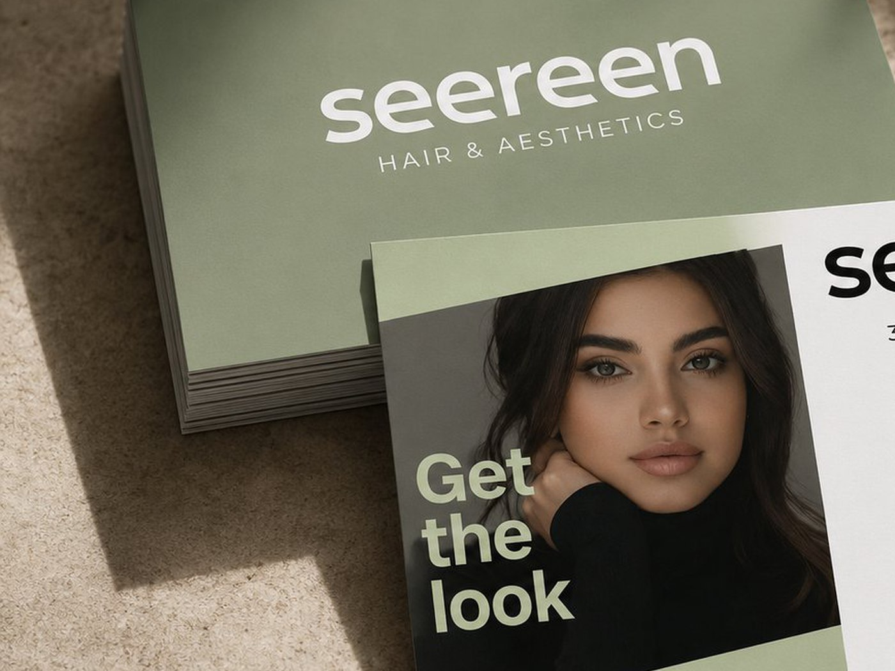
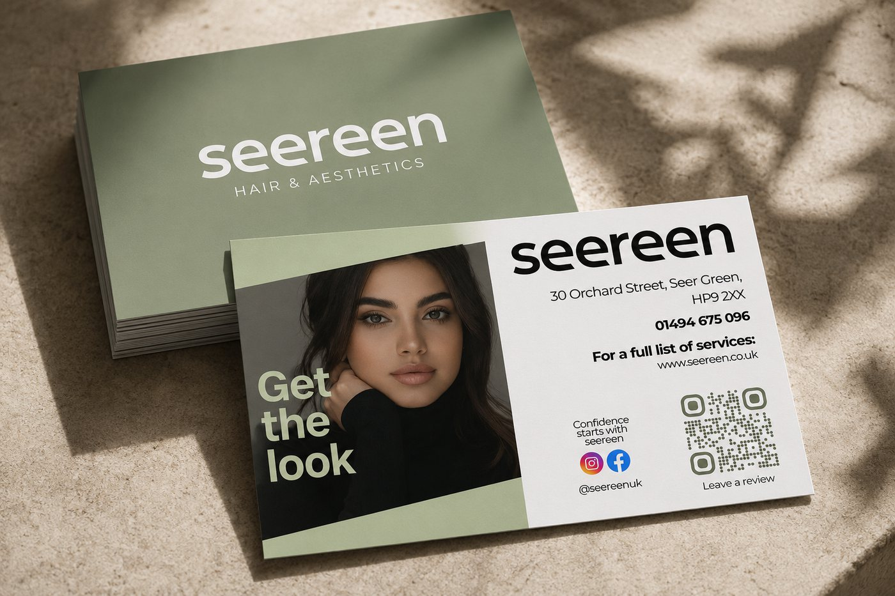
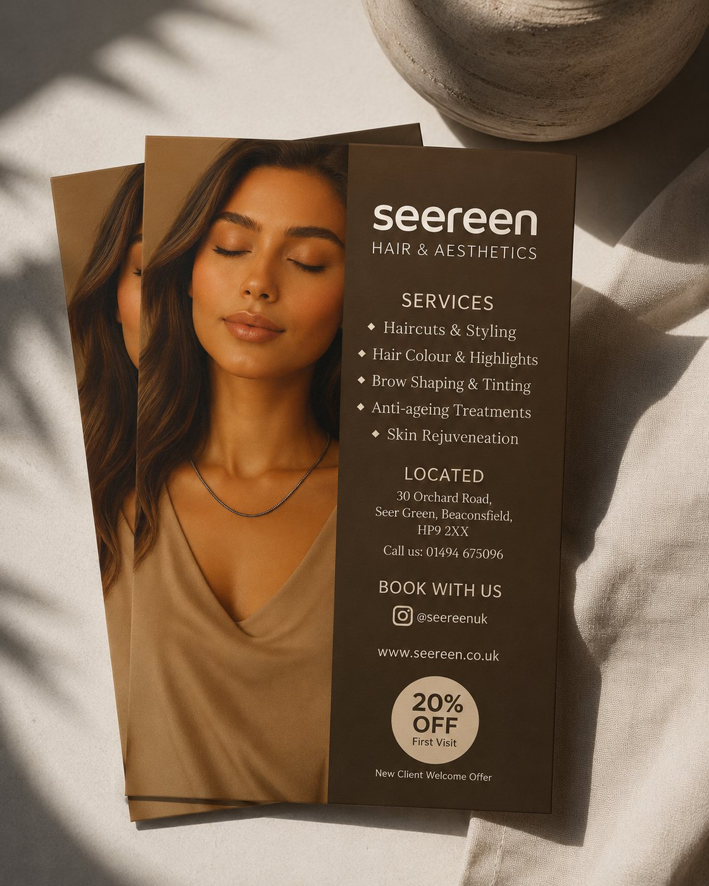
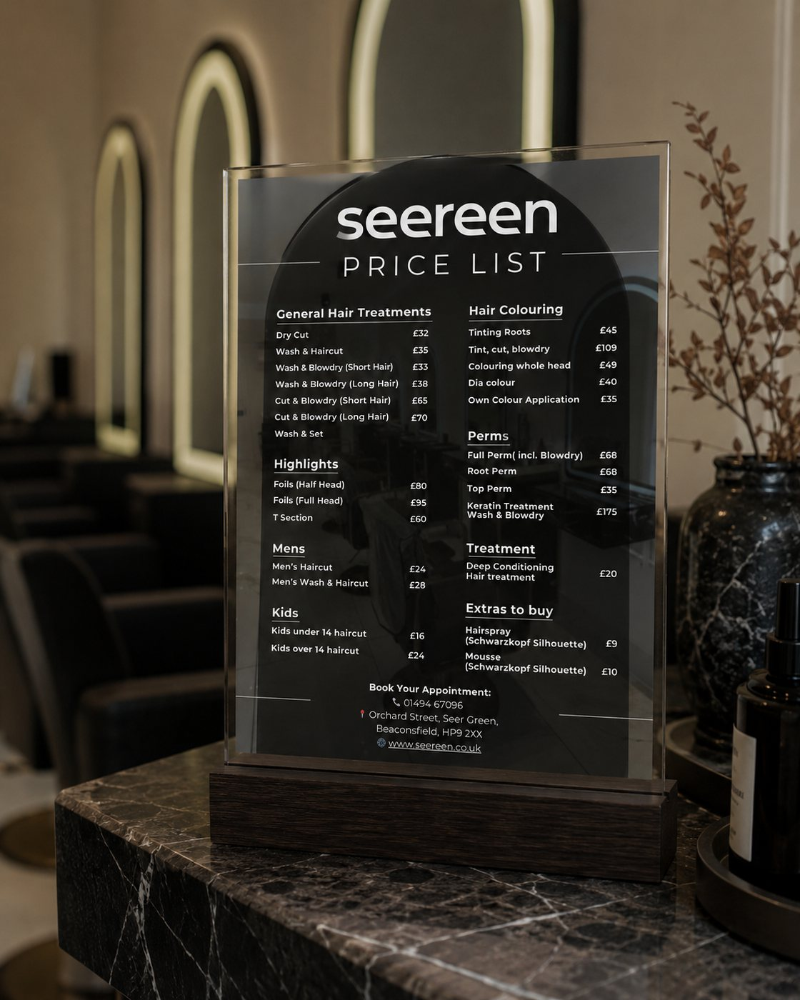
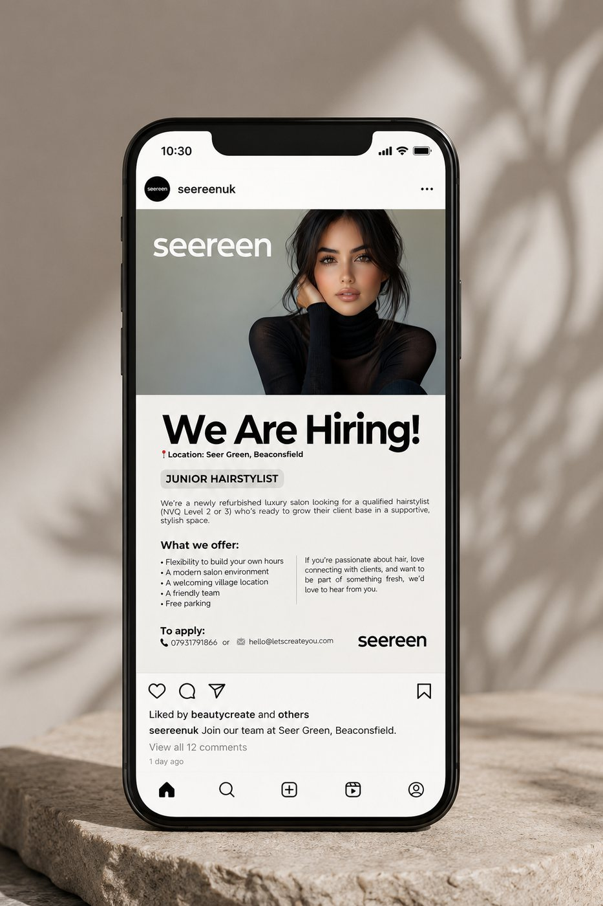
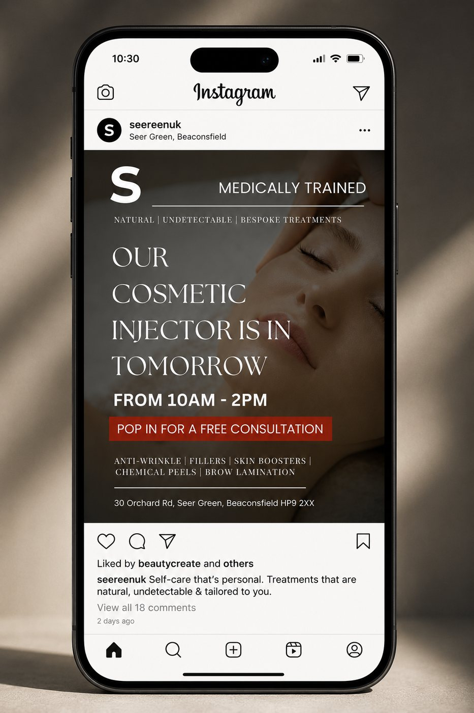

Next project
UK Housing Market & Intelligence

Visual System & Marketing Collateral · Seereen
Seereen is a hair and aesthetics studio built on care and craft. It needed an identity that felt premium without turning cold: somewhere you would trust with how you look and enjoy walking into. I created the wordmark, a warm and sunlit visual system, and print collateral that leads with real faces and real results.
From salon signage to price cards to social, every touchpoint now carries the same quiet welcome. Delivered through Noova over four weeks.
A warm, lowercase wordmark and a sunlit palette set the tone.

The studio sits in a category where most identities go one of two ways: clinical and cold, or decorative to the point of looking cheap. The brief was to land between them. A lowercase wordmark keeps the tone approachable, a sage and warm-neutral palette reads premium without going stark, and the type is set to stay legible at business card size and on a phone screen.
The system had to survive contact with reality. It is applied by the studio's own team, on their own phones, without a designer in the room, so every rule is one that can be followed without design software.
Print collateral that has to work as a sales tool, not just a leaflet.


The promotional flyer leads with a face rather than a logo, lists the service range in scannable groups, and carries a single introductory offer with the booking details directly beneath it. The price list was designed for the counter: treatments grouped the way clients actually ask for them, priced clearly, so staff spend less time explaining and clients can decide without asking.
Reusable layouts the studio can fill in themselves.


Two recurring jobs drove the templates: announcing who is in the studio and when, and hiring. Both are posted often and both were being made from scratch each time. Turning them into layouts with fixed type, colour and image positions means the studio can publish quickly and the feed still looks like one brand a month later.
What small-business brand work teaches that enterprise work does not.
A studio this size has no marketing team. Whatever gets designed has to be usable by the people cutting hair, between clients, on a phone. That constraint shaped every decision here more than any aesthetic preference did: fewer rules, larger type, templates instead of guidelines.
It is the same discipline that makes a dashboard useful rather than impressive. The work is only finished when the person who has to live with it can actually use it.